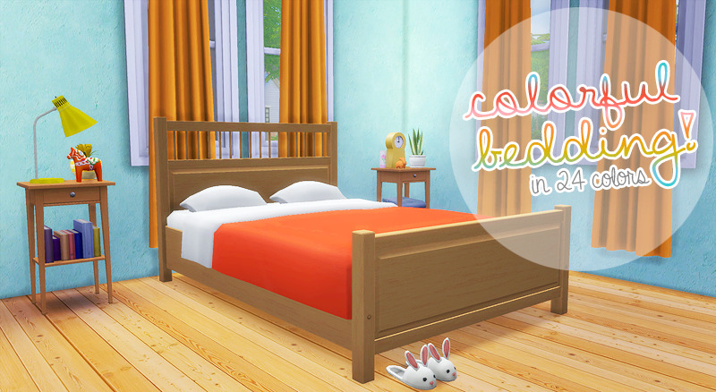
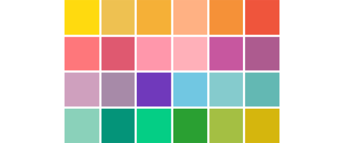

6/23/2018

mayberries
there seemed to be a lot of interest for these, so here we go! i’ve recolored the separated mattress (both single & double) by
. there are 24 colors in total, chosen from eversims’ & huning’s colors. i am also working on a less bright option so be on the lookout for those too! ^^

- ♥ download (mediafire) (mega)
credit: veranka for the original mesh ♥ eversims & huning for their color palettes